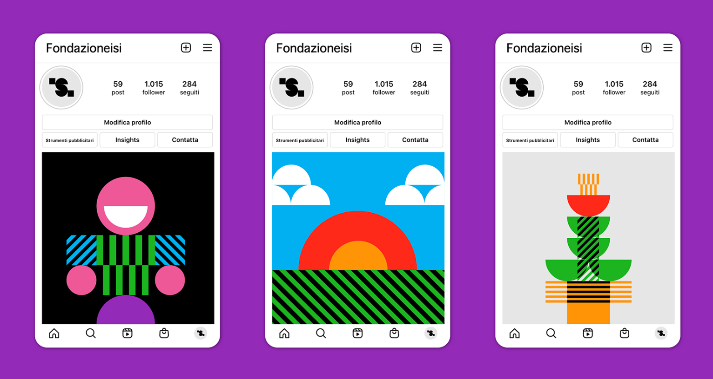
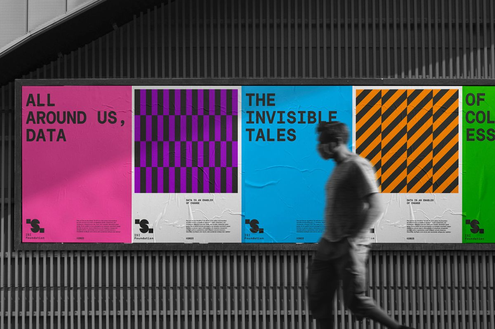

ISI Foundation: un’identità visiva per la scienza dei dati al servizio del cambiamento
ISI Foundation, centro di ricerca scientifica riconosciuto in tutto il mondo per l’esperienza nella scienza dei dati applicata sui temi della salute pubblica e in altri campi di rilevanza collettiva, sceglie di farsi affiancare da Pixel Craft per costruire un’identità visiva in grado di raccontare il proprio approccio scientifico e innovativo.
Questa nuova identità si esprime in modo particolarmente efficace sui canali social, dove la varietà di combinazioni grafiche permette di raccontare con freschezza e immediatezza i progetti e le iniziative di ISI. Lo stesso approccio è stato portato sul sito web, che offre un'esperienza immersiva nel mondo della data science, delle pubblicazioni e delle attività del centro. In linea con la vision di ISI, il sito si distingue per il suo tono “pop” e accessibile, pensato per avvicinare un pubblico ampio alla cultura dei dati.
Con questo progetto, Pixel Craft ha costruito una comunicazione che non solo rispecchia l’essenza di ISI Foundation, ma che è pronta a raccontare la sua evoluzione in modo sempre più dinamico e coinvolgente.